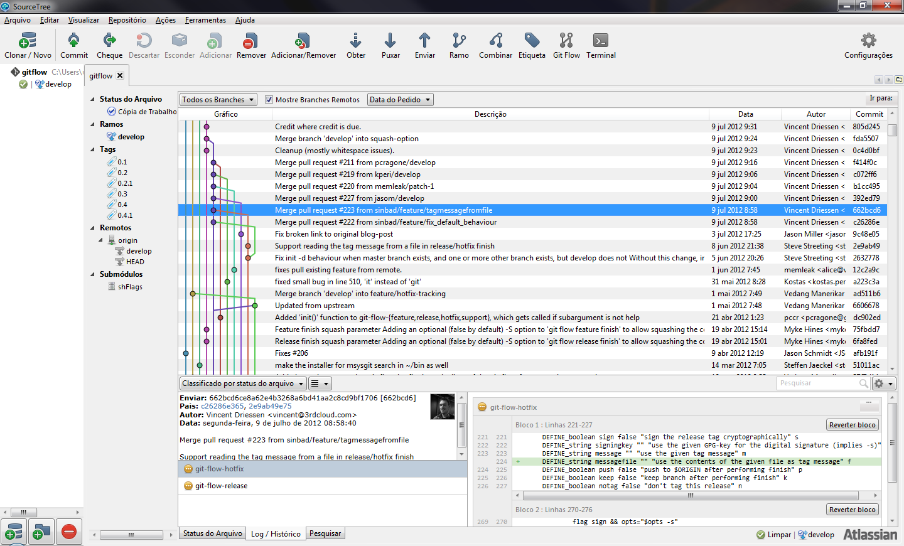

Docker e Docker-Compose
Git Essencial
Instalando Git - no Windows
SourceTree: http://www.sourcetreeapp.com/
Criando um repositório
~ $ git init # Inicializa um novo repositório do Git.
~ $ git clone # Cria uma cópia local de um repositório existente.
~ $ git config # Utilizado para configurar parâmetros da ferramenta.
Gravando alterações
# Adiciona arquivos modificados ao snapshot.
~ $ git add
# Exibe o estado atual do diretório de trabalho e snapshot.
~ $ git status
# Salva o snapshot no histórico do projeto.
~ $ git commit
# Exibe uma listagem com as versões anteriores de um projeto.
~ $ git log
Git Básico
Exemplo
# Cria uma cópia local do projeto.
~ $ git clone ssh://user@host/path/to/repo.git
# Efetuar checkout em um banch ja existente
~ $ git checkout develop
# Criar um novo branch
~ $ git checkout -b [BRANCH_NAME]
# Verificar a existência de modificações.
~ $ git status
# Inclui modificações na área de staging.
~ $ git add [arquivo, ou wildicard]
# Commit do conteudo dá área de staging.
~ $ git commit -m "Comentário útil!!!"
# Envia a atualização do branch local para o servidor
~ $ git push origin [BRANCH_NAME]
Workflows
- Centralizado:Todos compartilham um mesmo branch de desenvolvimento.
- Branches por feature:Cada novo desenvolvimento dá origem a um branch.
- Gitflow:Impõe um padrão à forma de trabalhar com branches por feature.
- Forking:Cada desenvolvedor trabalha sobre uma cópia do repositório remoto.
Git-Flow
Feature branches + padrão de uso
~ $ git-flow
usage: git flow [subcommand]
Available subcommands are:
init Initialize a new git repo with the branching model.
feature Manage your feature branches.
release Manage your release branches.
hotfix Manage your hotfix branches.
support Manage your support branches.
version Shows version information.
Try 'git flow [subcommand] help' for details.
myproject $ git flow init
Initialized empty Git repository in ~/myproject/.git/
No branches exist yet. Base branches must be created now.
Branch name for production releases: [master]
Branch name for "next release" development: [develop]
How to name your supporting branch prefixes?
Feature branches? [feature/]
Release branches? [release/]
Hotfix branches? [hotfix/]
Support branches? [support/]
Version tag prefix? []

Autor: Vincent Driessen
Livros
Referências
-=[ "live long and prosper" ]=-
_
.-T | _
| | | / |
| | | / /`|
_ | | |/ / /
\`\| '.' / /
\ \`-. '--|
\ ' |
\ .` /
| |